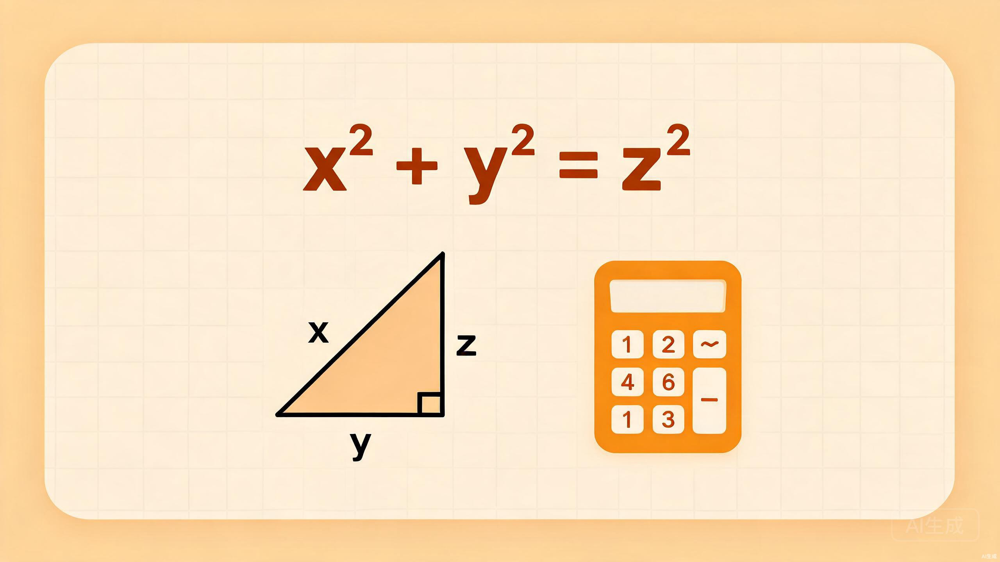

数学
涵盖代数、几何、统计与概率三大板块，系统构建初中数学知识体系

选择教材版本
不同版本的教材知识点编排略有差异，请选择你使用的教材
北师大版
北京师范大学出版社
七年级~九年级
78个知识点
苏科版
江苏凤凰科学技术出版社
七年级~九年级
82个知识点
华东师大版
华东师范大学出版社
七年级~九年级
80个知识点
知识体系概览
初中数学三大核心板块及其子知识点
代数
4个核心模块
有理数与实数
数轴、绝对值、平方根与立方根
整式与分式
单项式、多项式、因式分解
方程与不等式
一元一次、二元一次、一元二次方程
函数
一次函数、反比例函数、二次函数
几何
5个核心模块
线与角
相交线、平行线、角的度量
三角形
全等三角形、相似三角形、勾股定理
四边形
平行四边形、矩形、菱形、正方形
圆
圆的性质、与圆有关的位置关系
图形变换
平移、旋转、轴对称、位似
统计与概率
3个核心模块
数据收集与整理
普查、抽样调查、频数与频率
统计图表
条形图、折线图、扇形图、直方图
概率初步
随机事件、等可能事件、树状图